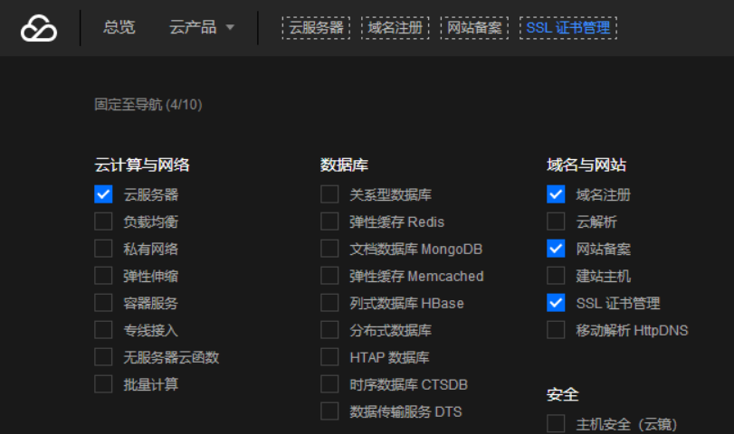

一、https协议介绍
HTTPS（全称：Hyper Text Transfer Protocol over Secure Socket Layer），
是以安全为目标的HTTP通道，简单讲是HTTP的安全版。即HTTP下加入SSL层，HTTPS的安全基础是SSL，
因此加密的详细内容就需要SSL。 https:URL表明它使用了HTTP，但HTTPS存在不同于HTTP的默认端口及一个加
密身份验证层（在HTTP与TCP之间）。
发展历史：
这个系统的最初研发由网景公司(Netscape)进行，并内置于其浏览器Netscape Navigator中，提供了身份
验证与加密通讯方法。现在它被广泛用于网络安全敏感的通讯，例如交易支付方面。
主要作用：
建立一个信息安全通道，来保证数据传输的安全；
确认网站的真实性，凡是使用了 https 的网站，都可以通过点击浏览器地址栏的锁头标志来查看网站
认证之后的真实信息，也可以通过 CA 机构颁发的安全签章来查询 。
HTTPS与HTTP的区别：
1、https协议需要到ca申请证书，一般免费证书很少，需要交费。
2、http是超文本传输协议，信息是明文传输，https 则是具有安全性的ssl加密传输协议。
3、http和https使用的是完全不同的连接方式，用的端口也不一样，前者是80，后者是443。
4、http的连接很简单，是无状态的；HTTPS协议是由SSL+HTTP协议构建的可进行加密传输、身份认证
的网络协议，比http协议安全。
SSL会话的简化过程：
客户端发送可供选择的加密方式，并向服务器请求证书
服务器端发送证书以及选定的加密方式给客户端
客户端取得证书并进行证书验证
如果信任给其发证书的CA
a. 验证证书来源的合法性；用CA的公钥解密证书上数字签名 b. 验证证书的内容的合法性：完整性验证 c. 检查证书的有效期限 d. 检查证书是否被吊销 e. 证书中拥有者的名字，与访问的目标主机要一致客户端生成临时会话密钥（对称密钥），并使用服务器端的公钥加密此数据发送给服务器，完成密钥交换
服务用此密钥加密用户请求的资源，响应给客户端
注意：SSL是基于IP地址实现,单IP的主机仅可以使用一个https虚拟主机
二、实验：实现https
前期准备：
两台虚拟机
CA： CentOS 7.4 IP：192.168.30.10
客端户：CentOS 6.9 IP：192.168.30.11
实验预期：
CA服务器为客户端颁发证书，使其能够实现https访问
具体步骤：
CA端：
生成私钥
(umask 077;openssl genrsa -out /etc/pki/CA/private/cakey.pem 2048)
自签名证书
openssl req -new -x509 -key /etc/pki/CA/private/cakey.pem -out /etc/pki/CA/cacert.pem -days 3650
交互式填写
国家：CN
省份：beijing
城市：beijing
公司名称：lvpx
部门：opt
Common name：lvpx.com
Client端：
生成客户端私钥
(umask 066;openssl genrsa -out httpd.key 1024)
生成证书申请
openssl req -new -key httpd.key -out httpd.csr
交互式填写
国家：CN
省份：beijing
城市：beijing
公司名称：lvpx
部门：opt
Common name：http.lvpx.com
注：国家，省份，公司必须一致才能申请成功
将证书申请发送到CA
scp httpd.csr 192.168.30.10:/root/
CA端：
建立已颁发证书信息列表文件；V：生效；R：吊销；
touch /etc/pki/CA/index.txt
建立证书序列号
echo 0F > /etc/pki/CA/serial
颁发证书
openssl ca -in httpd.csr -out /etc/pki/CA/certs/httpd.crt -days 730
将证书及CA自授权证书发送到客户端：
scp /etc/pki/CA/certs/httpd.crt 192.168.30.11:/root/
scp /etc/pki/CA/cacert.pem 192.168.30.11:/root/
Client端：
安装加密模块
yum install mod_ssl –y
rpm -ql mod_ssl
修改配置文件其中此三行
vim /etc/httpd/conf.d/ssl.conf
SSLCertificateFile /etc/httpd/conf.d/ssl/httpd.crt
SSLCertificateKeyFile /etc/httpd/conf.d/ssl/httpd.key
SSLCACertificateFile /etc/httpd/conf.d/ssl/cacert.pem
重启httpd服务
service httpd restart
此时打开浏览器已能够正常访问https://192.168.30.11/
显示不安全的页面，这是由于证书未添加到浏览器信任造成的
将CA自签名证书导入到浏览器即可安全访问
三、http重定向https
当我们区域https协议后，就出现了一个问题，此时http与https是可以同时被访问的，那么当用户用http访
问网站时，还是有安全隐患的，如何解决呢？我们只需要将http重定向到https即可
实现http请求转发至https的URL方法如下：
方法一：重定向
备注：有安全隐患，每次请求还会先走http协议
Redirect [status] URL-path URL
status状态：
permanent: 永久301
Temp： 临时302
示例：
Redirect temp / https://www.magedu.com/
方法二：HSTS
备注：仅第一次访问会走http协议，建议使用此种方法
HSTS:HTTP Strict Transport Security
服务器端配置支持HSTS后，会在给浏览器返回的HTTP首部中携带HSTS字段。浏览
器获取到该信息后，会将所有HTTP访问请求在内部做307跳转到HTTPS。而无需任何
网络过程
HSTS preload list
作用：使第一次访问也走https协议
是Chrome浏览器中的HSTS预载入列表，在该列表中的网站，使用Chrome浏览器访
问时，会自动转换成HTTPS。Firefox、Safari、Edge浏览器也会采用这个列表
实现HSTS示例：
vim /etc/httpd/conf/httpd.conf
Header always set Strict-Transport-Security “max-age=31536000”
RewriteEngine on
RewriteRule ^(/.*)$ https://%{HTTP_HOST}$1 [redirect=302]
curl -I www.taobao.com
Strict-Transport-Security: max-age=31536000
四、云主机实现免费的https
现在许多云服务厂商都提供了免费的域名型加密SSL证书，仅对域名所有权进行验证，快速颁发，较好保
护网站数据安全，适合个人，小微企业应用。
本次就以在腾讯云申请免费SSL证书为例：
腾讯云官方网站：https://cloud.tencent.com
1登录进入页面后点击上方+号，添加SSL证书管理

2点击申请证书，显示证书颁发机构为亚洲诚信(TRUSTASIA)，证书有效期为一年
3.点击确定后，会要求输入域名，申请邮箱等信息，按需填写即可
4.接下来会进行域名身份验证，这里我们选择选择手动DNS验证
5.点击确认申请，生成解析记录
接下来我们需要等待10分钟左右证书审核通过
6.回到我们的域名DNS管理页，添加一条TXT/SPF的解析
HOSTNAME填写腾讯云解析记录中的主机记录
TEXT填写记录值
7.证书申请完成后，就可以点击下载了
8.根据自己web服务类型，进行后续配置
腾讯云官方证书安装方法指引文档：https://cloud.tencent.com/document/product/400/4143